Next: Fractals Up: Application: Newton's method Previous: Description of the method Contents Index
Suppose that the function  has a zero at
has a zero at  , i.e., 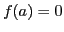.
, i.e., 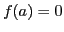.
If  is continuously differentiable and its derivative does not vanish
at
is continuously differentiable and its derivative does not vanish
at  , then there exists a neighborhood of
, then there exists a neighborhood of  such that for
all starting values
such that for
all starting values  in that neighborhood, the sequence
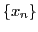 will converge to
in that neighborhood, the sequence
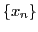 will converge to  .
.
In practice this result is ``local'' and the neighborhood of
convergence is not known a priori, but there are also some results
on ``global convergence.'' For instance, given a right neighborhood
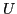 of  , if
, if  is twice differentiable in and if
is twice differentiable in and if
 ,
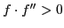 in , then, for each 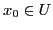 the
sequence 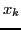 is monotonically decreasing to
,
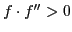 in , then, for each 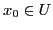 the
sequence 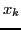 is monotonically decreasing to  .
.